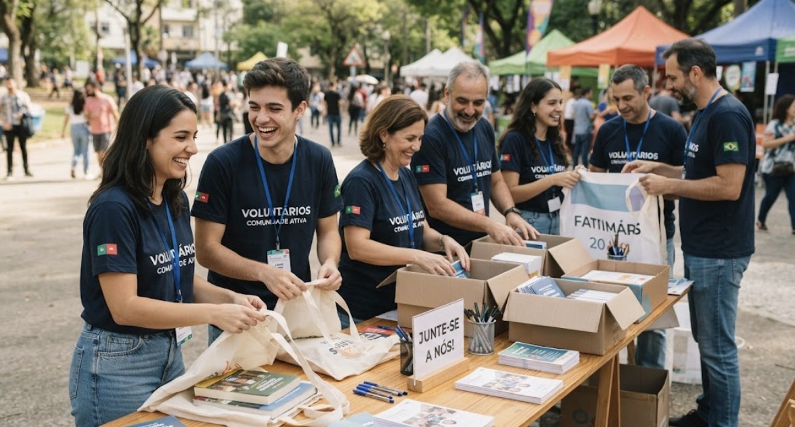

Instituto Renascer
Quem somos

O Instituto Renascer é uma organização do terceiro setor dedicada a apoiar famílias em situação de vulnerabilidade social por meio de educação, geração de renda e assistência comunitária.
Nossa missão
Promover dignidade e oportunidades reais de transformação social, conectando doadores, voluntários e comunidades.
Nosso impacto
Desde 2015, já impactamos diretamente mais de 4.000 pessoas em 12 comunidades.
Números de 2025
320 famílias atendidas · 180 voluntários ativos · 45 projetos concluídos.